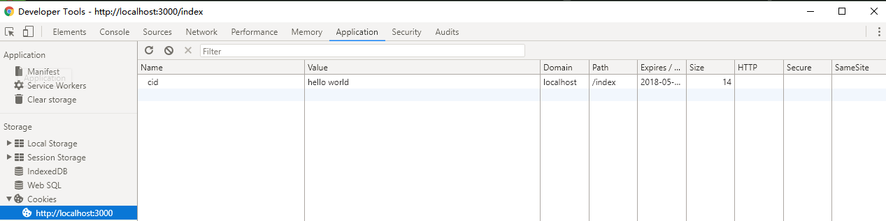

koa2使用cookie
使用方法
koa提供了从上下文直接读取、写入cookie的方法
- ctx.cookies.get(name, [options]) 读取上下文请求中的cookie
- ctx.cookies.set(name, value, [options]) 在上下文中写入cookie
koa2 中操作的cookies是使用了npm的cookies模块，源码在https://github.com/pillarjs/cookies，所以在读写cookie的使用参数与该模块的使用一致。
例子代码
const Koa = require('koa')
const app = new Koa()
app.use( async ( ctx ) => {
if ( ctx.url === '/index' ) {
// 设置cookie
ctx.cookies.set(
'cid',
'hello world',
{
domain: 'localhost', // 写cookie所在的域名
path: '/index', // 写cookie所在的路径
maxAge: 10 * 60 * 1000, // cookie有效时长
expires: new Date('2017-02-15'), // cookie失效时间
httpOnly: false, // 是否只用于http请求中获取
overwrite: false // 是否允许重写
}
)
ctx.body = 'cookie is ok'
} else {
ctx.body = 'hello world'
}
})
app.listen(3000, () => {
console.log('[demo] cookie is starting at port 3000')
})
运行例子
执行脚本
node index.js
运行结果
访问http://localhost:3000/index
- 可以在控制台的cookie列表中中看到写在页面上的cookie
- 在控制台的console中使用document.cookie可以打印出在页面的所有cookie（需要是httpOnly设置false才能显示）
